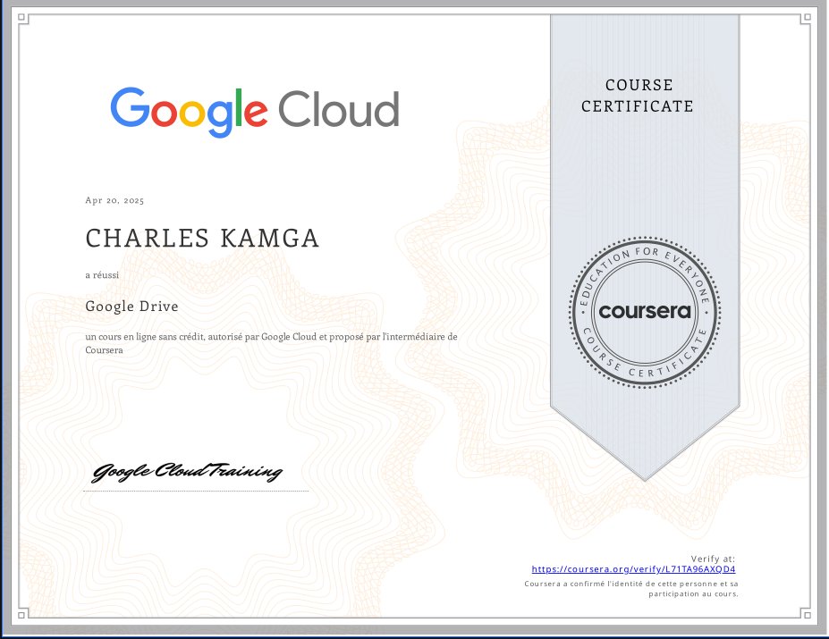
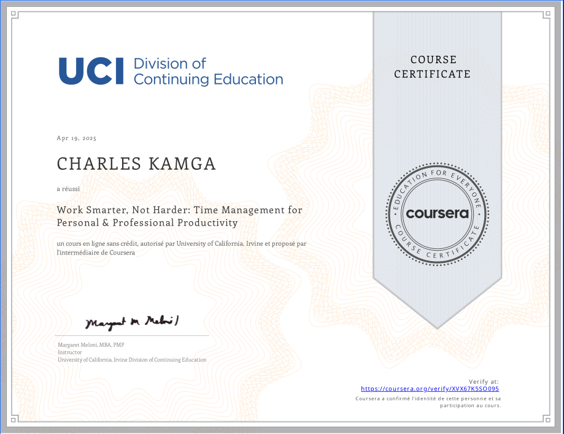
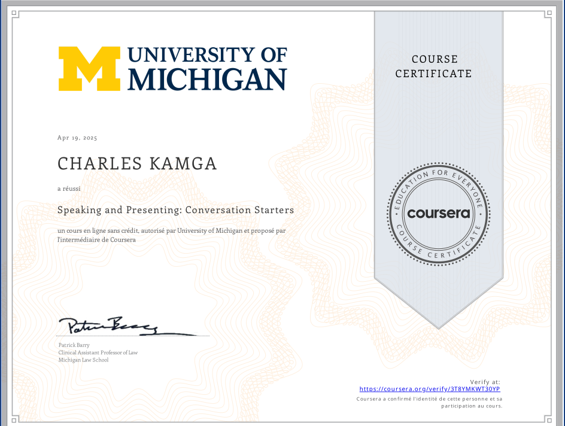

Mes Certifications
Google Drive
Google Cloud via Coursera

Date d'obtention : 20 Avril 2025
Compétences : Gestion de fichiers, Collaboration, Organisation, Google Workspace, Partage de documents
Voir le certificat PDFWork Smarter, Not Harder
University of California, Irvine via Coursera

Date d'obtention : 19 Avril 2025
Compétences : Gestion du temps, Productivité, Planification stratégique, Gestion des priorités, Gestion de crise
Voir le certificat PDFSpeaking and Presenting
University of Michigan via Coursera

Date d'obtention : 19 Avril 2025
Compétences : Prise de parole en public, Communication, Présentation, Techniques de conversation, Établissement de relations
Voir le certificat PDFIoT Wireless & Cloud Computing
Yonsei University via CourseraDate d'obtention : 25 Mai 2025
Compétences : IoT, Cloud Computing, Réseaux sans fil, AWS, Protocoles réseau, Télécommunications, Données en temps réel
Voir le certificat PDF